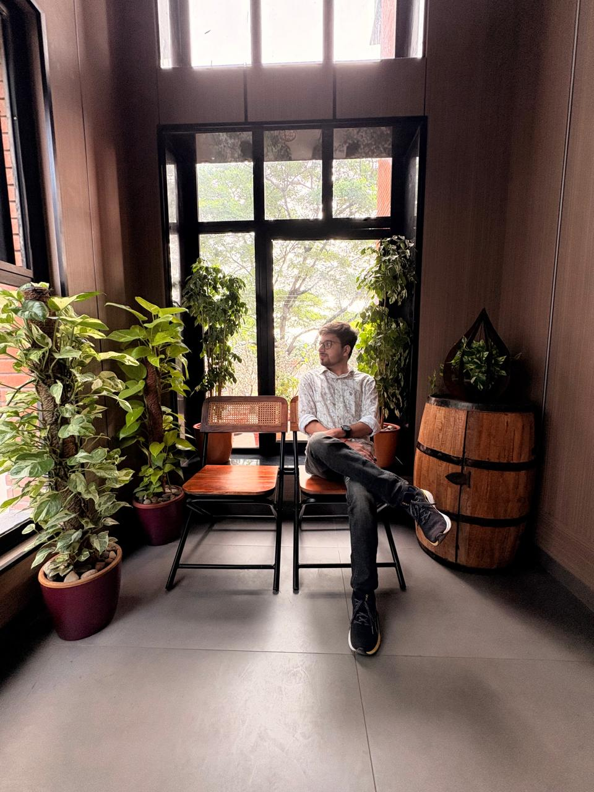
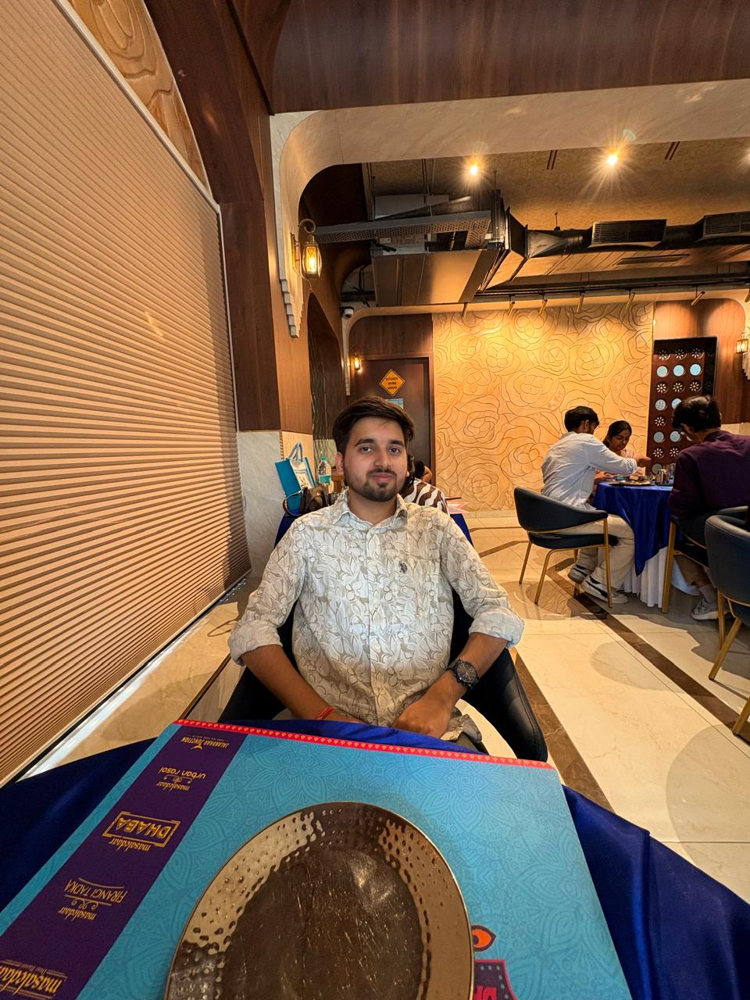

Professional Profile
 I am a Computer Science undergraduate (Class of '28) at VIT Vellore with a relentless focus on Backend Development. My foundation was built at Birla Public School, Pilani, where I developed a strong aptitude for Math and Physics.
My passion lies in mastering efficient coding. I have developed a strong command of Data Structures and Algorithms (DSA) and Java to solve complex computational problems. Combined with my background in JavaScript and Python, I am eager to build scalable applications.
🚀 Technical Toolkit: Java, C++, C, Python, JavaScript, MATLAB
🧠 Core Concepts: DSA, Object-Oriented Programming (OOP)
🎓 Certifications & Achievements
- Generative AI: Certified by NASBA & LinkedIn (Jan 2026).
- DSA Self Paced: GeeksforGeeks Graduate (Dec 2025).
- Remote Sensing & GIS: IIRS/ISRO Summer School (Aug 2021).
- CoofOff 9.0: CodeChef-VIT Student Chapter Participant.
My Hobbies

1. Acting & Leadership
My creative side thrives in Acting. I love the art of storytelling and expressing complex emotions on stage. This helps me understand different perspectives, a skill I also honed as a House Member at school, improving my leadership and communication abilities.

2. Mathematics & Logic
My coding skills are rooted in a deep love for Mathematics. I proudly represented my school at the Infinity Mathematics Olympiad (Mumbai) and participated in the SilverZone International Olympiad.
I approach every hackathon and coding challenge with this same mathematical mindset—translating logic into award-winning solutions.